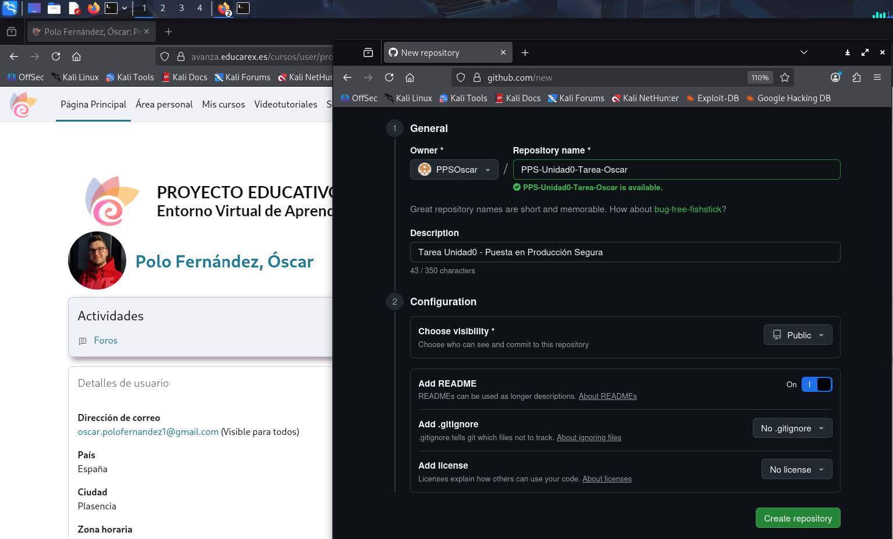
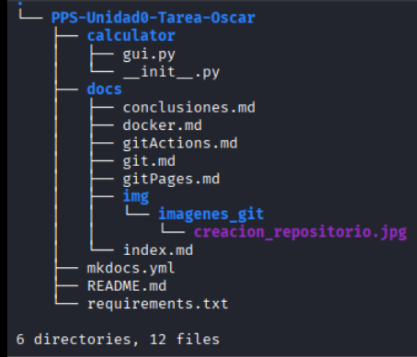

Git — Creación del repositorio y estructura
En este apartado documento y recopilo todo el desarrollo del apartado Git, explicando paso a paso cómo he creado el repositorio, cómo he clonado en máquina local y cómo he construido la estructura de directorios y archivos.
1. Objetivos del apartado Git
Incluyo en este apartado:
- Creación y clonación de un repositorio en GitHub.
- Organización de la estructura de un repositorio.
- Realización de commits y subida de cambios a repositorio remoto.
- Añadir colaboradores.
- COnfiguración de Git en local.
Es la base sobre la cual se construyo toda la actividad.
2. Creación del repositorio en GitHub
En primer lugar, creo el repositorio en GitHub:

- En mi cuenta de GitHub --> New repository.
- Asigno el nombre al repositorio: PPS-Unidad0-Tarea-Oscar
- Selecciono la visibilidad --> Public.
- Añado el archivo README.
3. Añadir colaborador al repositorio
Para permitir acceso al repositorio a otros usuarios, los añado como colaboradores. En este caso, únicamente al usuario de mi profesor:
Para añadir colaboradores:
Repositorio --> Settings --> Collaborators --> Add collaborator
Muestro el usuario de mi profesor ya añadido como colaborador:

4. Clonación del repositorio en mi máquina.
Antes de realizar la clonación del repositorio, es imprescindible realizar estos dos pasos previos:
- Inicializar las variables
Tu_nombre=PPSOscar
Tu_mail_github=oscar.polofernandez1@gmail.com
Tu_usuario_github=PPSOscar
git config --global user.name PPSOscar
git config --global user.email oscar.polofernandez1@gmail.com
git config --global init.defaultBranch main
git config --global core.editor nano
- Generar la clave SSH
ssh-keygen -t ed25519 -C $Tu_mail_github
# Iniciamos el agente en segundo plano
eval "$(ssh-agent -s)"
#Nos mostrará un mensaje como
#Agent pid 59566 ssh-add ~/.ssh/id_ed25519
Una vez generada la clave SSH nos iremos a nuestra cuenta de GitHub, apartado Settings --> SSH and GPG keys --> New SSH key --> Pegamos nuestra clave SSH y guardamos.
De esta forma, mi máquina Kali Linux queda vinculada a través de SSH con mi repositorio remoto. Listo para clonar.
Para clonar el repositorio, me sitúo en el directorio local en el que quiera tener guardada la actividad y ejecuto en la terminal el siguiente comando:
git clone git@github.com:PPOscar/PPS-Unidad0-Tarea-Oscar.git
LA URL se obtiene en nuestro repositorio de GitHub --> Code --> SSH
A continuación muestro la clonación del repositorio y la estructura inicial clonada mediante el comando tree:

- Para ver los archivos ocultos del repositorio, como el .git, hay que ejecutar el comando tree -a.
5. Creación de la estructura del repositorio
Creo la estructura que me pide la actividad:
# El directorio principal
mkdir PPS-Unidad0-Tarea-Oscar
# Me situo en el directorio principal
cd PPS-Unidad0-Tare-Oscar
# Creo carpetas principales
mkdir calculator
mkdir docs
mkdir .github
mkdir .github/workflows
# Creo archivos dentro de calculator/
touch calculator/__init__.py
touch calculator/gui.py
# Creo archivos dentro de docs/
touch docs/index.md
touch docs/git.md
touch docs/gitActions.md
touch docs/gitPages.md
touch docs/docker.md
touch docs/conclusiones.md
touch docs/img
# Creao archivos raíz
touch mkdocs.yml
touch requirements.txt
# Creao archivo de workflow
touch .github/workflows/CreacionDocumentacion.yml
De esta forma queda preparada toda la estructura inicial de la actividad. Nos debería quedar como en la siguiente imagen.

6. Subida al repositorio
Después de crear la estructura, hago la primera subida al repositorio:
- git add . --> Prepara todos los cambios realizados en archivos y carpetas.
- gitt commit -m "" --> Crea un punto de guardado en el historial del repositorio.
- git push origin main --> Envía todos los cambios al repositorio remoto. En este caso, a la rama main.
- git status --> Muestra el estado actual del repositorio.
git add .
git commit -m "Estructura inicial de la actividad"
git push origin main
git status
Este commit marca el punto inicial de la actividad, con todos los archivos iniciales.